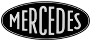
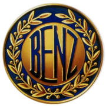
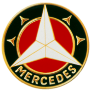
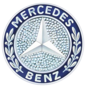
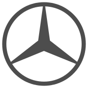
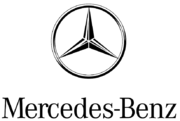

Mercedes-Benz is a German automobile manufacturer, a multinational division of the German manufacturer Daimler AG. The brand is known for luxury automobiles, buses, coaches, and trucks. The headquarters of Mercedes-Benz is in Stuttgart, Baden-Württemberg, Germany. The name first appeared in 1926 under Daimler-Benz, but traces its origins to Daimler-Motoren-Gesellschaft's 1901 Mercedes and to Karl Benz's 1886 Benz Patent-Motorwagen, which is widely regarded as the first gasoline powered automobile. Mercedes-Benz's slogan is "Das Beste oder nichts" (English: "The best or nothing"). Mercedes-Benz is one of the most recognized automotive brands worldwide.
The name first appeared in 1926 under Daimler-Benz, but traces its origins to Daimler-Motoren-Gesellschaft's 1901 Mercedes and to Karl Benz's 1886 Benz Patent-Motorwagen, which is widely regarded as the first gasoline powered automobile. Mercedes-Benz's slogan is "Das Beste oder nichts" (English: "The best or nothing"). Mercedes-Benz is one of the most recognized automotive brands worldwide.
Mercedes-Benz traces its origins to Karl Benz's creation of the first petrol-powered car, the Benz Patent Motorwagen, financed by Bertha Benz and patented in January 1886, and Gottlieb Daimler and engineer Wilhelm Maybach's conversion of a stagecoach by the addition of a petrol engine later that year. The Mercedes automobile was first marketed in 1901 by Daimler-Motoren-Gesellschaft. The first Mercedes-Benz brand name vehicles were produced in 1926, following the merger of Karl Benz's and Gottlieb Daimler's companies into the Daimler-Benz company. Throughout the 1930s, Mercedes-Benz produced the 770 model, a car that was popular during Germany's Nazi period. Adolf Hitler was known to have driven these cars during his time in power, with bulletproof windshields. Most of the surviving models have been sold at auctions to private buyers. One of them is currently on display at the War Museum in Ottawa, Ontario. Mercedes-Benz has introduced many technological and safety innovations that later became common in other vehicles. Mercedes-Benz is one of the best-known and established automotive brands in the world, and is also one of the world's oldest automotive brand still in existence today in 2015, having produced the first petrol-powered car.
Mercedes-AMG became a majority owned division of Mercedes-Benz in 1999. The company was integrated into DaimlerChrysler in 1999, and became Mercedes-Benz AMG beginning on 1 January 1999.
Mercedes-AMG was the official engine supplier for the second oldest and most successful F1 team by Grand Prix wins, McLaren Racing from 1995-2014. In 2013 it was announced that after the last year with Mercedes contract with McLaren, Mercedes would be dropped and be replaced by Honda, with whom McLaren had world championship wins in the past together. Mercedes have since gone on to buy their own Formula 1 team, buying the former Honda Racing F1 team, Brawn GP, and turning it into Mercedes F1 in 2010. Despite a slow start, in 2012 the team began to show progress and rise to the front of the Grid with their first win coming from driver Nico Rosberg at the 2012 Chinese Grand Prix, before showing further progress again in 2013, when the team signed Lewis Hamilton from McLaren to replace the retiring Michael Schumacher. Hamilton's first win for the team came at the 2013 Hungarian Grand Prix.
Road car manufacturingFrom 2003 to 2009, Mercedes were in a joint venture with McLaren Group to manufacture the Mercedes-Benz SLR McLaren. At this time, Mercedes owned 40% of McLaren Group. Due to Mercedes purchasing Brawn GP, a F1 team, Mercedes decided to sell their shares back to Ron Dennis, as McLaren would be their rival in the F1 championship.
Daimler's ultra-luxury brand Maybach was under Mercedes-Benz cars division until 2013, when the production stopped due to poor sales volumes. It now exists under the Mercedes-Maybach name, with the models being ultra-luxury versions of Mercedes cars, such as the 2016 Mercedes-Maybach S600.
|  |  |  |  |  |  |
| 1902-1909 | 1909-1916 | 1916-1926 | 1926-current | 1980-current | 1990-current |
Using the theme 'Vision Gran Turismo', the world's leading automotive manufacturers and design studios were to develop concept models which give a unique insight into the further development of the automobile.
As virtual vehicles that nonetheless function just like a real car, the visionary concepts will be gradually unveiled in and integrated into the new game Gran Turismo® 6 through online updates.
Check out the video here..
A 2-door, 2-seat grand tourer coupé produced by Mercedes-AMG. The sports car was presented on September 9, 2014 and was officially unveiled to the public in October 2014 at the Paris Motor Show. The car is produced in two performance variations, both models went on sale in March 2015, with a GT3 racing variant of the car expected to be released in 2016. All variants are assembled at the Mercedes-Benz plant in Sindelfingen, Germany.
The Mercedes-AMG CLS 63 is an exceptional automobile in its class. The sporty, elegant Coupé is an exciting proposition boasting a new and revolutionary AMG design idiom, exciting driving dynamics and individualization options.
Features exclusive to AMG models include: perforated sport seats, 18-inch (457 mm) light-alloy wheels with wider tires (for the UK), 19-inch five-spoke light-alloy wheels (standard in North America, optional for all other markets), large air inlets and quad chromed oval exhaust pipes.